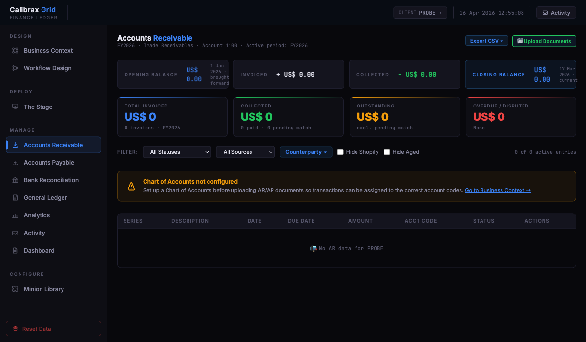
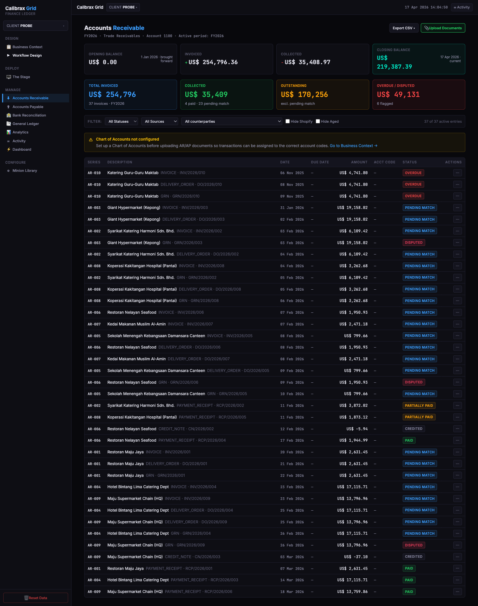

From Vibe-Coded Demo
to Production Candidate
Ten probes into a structured method for rewriting AI demos. The generator-evaluator pattern is now empirically validated. Here's what works, what doesn't, and what it could mean for Calibrax.
10
empirical probes across extraction and build
6
build iterations on the Grid Finance Ledger
~$5.2K
total API spend across the programme to date
Audience: Calibrax leadership & PM. This is the empirical log of the programme. For the architectural blueprint see the v1 proposal.
The thesis, stated plainly
Most AI demos die on the bench. They work well enough to sell a deal, then collapse when a real customer pushes on them. The standard fix — "let's rewrite it properly" — takes months, usually ships late, and almost always loses the design intuition that made the demo interesting in the first place.
Autoship is a bet that this rewrite can be largely mechanised, provided you solve the right bottleneck. Over the past weeks we ran ten empirical probes on the Calibrax Grid Finance Ledger prototype — each isolating one stage of the pipeline and testing it under realistic conditions. The probes are numbered; their findings are cumulative. Probe 2.5 completed on 2026-04-20 and is the most important data point in the series so far.
The core finding: extracting a reliable specification from a messy demo is the hard part. Once you have that spec, rebuilding from it is tractable with modern LLMs. Probe 2.5 produced a clean 14-of-14 journey-walk build with 145/145 oracle tests passing, after a separate reviewer agent caught four real plan-level failures the builder would otherwise have shipped — the first empirical validation that the author-discharges-their-own-gate problem can be broken structurally.
Demo → production rewrites cost months
and lose design intent
A working demo is the most expensive thing a team owns that does not yet have a specification. Someone — usually a senior engineer with good product taste — built it in a week. It embodies decisions that were never written down: how the primary user flow actually feels, which edge cases matter, what the layout should look like when populated with real data.
When that demo gets rewritten for production, two things reliably go wrong. First, it takes much longer than expected. A team that scopes "six weeks" typically ships in three to six months, because every small decision the demo quietly made has to be re-decided on purpose. Second, the rebuilt version loses the design sense. A PM reviews the rewrite and says "this is technically correct but it feels worse than the prototype." The rewrite was faithful to the written ticket and unfaithful to the unwritten feel.
The demo IS the spec —
and it's unwriteable by hand
The natural instinct is to solve this with better documentation. Have the prototype author write a proper PRD before the rewrite begins. This fails for a reason that becomes obvious once you try it: the demo contains far more decisions than any human can enumerate. There are hundreds of small layout choices, dozens of data-shape conventions, implicit rules about empty states, subtle coupling between pages. The author didn't write them down because they didn't decide them consciously — they emerged while building.
A human-written PRD is always a lossy compression of the actual demo. And the loss is not uniform: the things that get written down are the things the author thinks about explicitly, which tend to be the obvious things. The things that get dropped are the gut-feel decisions, which are exactly the decisions that make the demo feel good.
An LLM, by contrast, can systematically walk the demo and extract structure that a human would not bother to type out. The question is whether the extracted structure is actually reliable enough to rebuild against. That's what the probes test.
Extracting the spec is the hard part.
Rebuilding from a good spec is tractable.
Modern coding LLMs are already very strong at local code generation, repair, and iteration — that capability is a commodity. What they are not strong at is inferring latent product intent from a messy codebase under commercial pressure. And yet: if you can give the LLM a clean, structured description of what to build, it will build it reliably. The bottleneck has moved up the stack.
Autoship is organised around this observation. Most of the engineering invested so far is not in the code-generation loop — that's a relatively thin wrapper over capabilities we get from Claude Code for free. The engineering is in the spec-extraction stage: how do you walk a prototype, interrogate it in multiple independent ways, and produce an artifact pack that is good enough to rebuild against?
The extracted artifacts are the anchor. The generated tests are the judge. The rewrite is a downstream consequence — not a translation of the original code, but a re-implementation of what the spec describes.
How the pipeline is shaped
Two stages, run in sequence. We have held the shape steady across the last eight probes — the fixes have been to what happens inside each stage, not to the overall topology.
Reverse-spec extraction
Four specialised probe agents walk the demo in parallel, each with a narrow remit: one clicks through the UI, one reads the static code, one extracts the data model, one catalogues external dependencies. A reconciler merges their independent reports; a critic flags contradictions and gaps for a human to resolve.
The output is an artifact pack: api-spec.json, data-model.json, user-journeys.json, reference screenshots, sample data, and a signed-off decisions log. For the Calibrax ledger prototype this pack lands at ~430K of structured content.
Ralph-loop build
A build controller takes the artifact pack and dispatches per-slice executors. Each slice is one user journey: "create an invoice and see it appear in the ledger", "reconcile a bank statement against open receivables". The executor implements it end-to-end — data, API, UI — and the slice is verified by an oracle (generated contract tests + Playwright journey walks + reference-screenshot comparison) before the next slice begins.
The loop has a specific shape borrowed from two independent precedents — Geoffrey Huntley's "Ralph loop" for coding and Andrej Karpathy's autoresearch for ML experiments. Both converged on the same recipe: fresh context per iteration, external state in a progress file, deterministic feedback signals, single-writer. The architectural rationale is in the companion proposal.
Why this shape
Splitting extraction from build means each stage can be improved independently. When we find a problem in the built app, we can usually localise it: is it a gap in the artifact pack, or in how the executor consumed it? This separability is what lets the probes make progress without the whole design becoming entangled.
The probe ladder
Each probe layered a fix on top of the previous one's failure. Read it as a ladder — every rung is an empirical answer to the rung below.
| Probe | Wall-clock | What it tested | Outcome |
|---|---|---|---|
| 0 | — | Manual end-to-end walk of the whole pipeline | Shape validated. The pipeline holds together if run carefully by hand. |
| 1 | 1h 24m | Automated ingest — can agents run the four probes unattended? | Yes. Output schemas prevent lazy merges; quality jumps 3.3× vs unstructured. |
| 1.5 | 59m | Orchestration by an LLM agent instead of a shell script | Works autonomously. Same state model, richer output on design artifacts. |
| 2 | 55m | First full rebuild — can a Ralph loop turn the spec into a running app? | Yes — 4.5K lines, 45+ endpoints, 11 pages, zero human edits. But: oracle was weak, app returned empty arrays everywhere. |
| 2.1 | 5h 16m | Build-controller + stronger oracle + vertical slices | API layer now excellent (122/122 tests pass). Frontend became a disconnected shell — fix exposes next gap. |
| 2.2 | 2h 5m | Playwright journey tests added to catch frontend gaps | Tests don't work pre-generated — selectors depend on what the executor decides to name buttons. 6 of 11 pages end up as scaffold placeholders. |
| 2.3 | 1h 58m | Slice by user journey, not by database table; atomic-task verification | Orphan pages fixed. New failure: dialogs open but their buttons do nothing — the build optimised for "the affordance exists" not "the action works." |
| 2.4 | 4h 16m | Seed real sample data; reference screenshots as layout contract; five forcing-function gates | The AR page renders as a structural match to the prototype, populated with real data. Five gates absorbed — self-evaluation confirmed as the structural cause. |
| 2.5 | 4h 27m | Generator-evaluator pattern — a dedicated plan-reviewer agent, separate from the builder | Validated. Reviewer caught 4 plan-level failures across 2 review cycles; builder revised and the second plan was APPROVED. Final build: 14/14 journey walks pass end-to-end, 145/145 oracle tests pass, zero dialog theatre. Reviewer cost <2% of the probe. |
Wall-clock is active time the pipeline was running, not calendar time. Cross-track synthesis lives at docs/learnings.md; detailed track histories live at docs/extract-learnings.md and docs/deliver-learnings.md; per-probe metrics stay in docs/probe-summary.md.
Three patterns stand out across the ladder
One. Through probe 2.4, each fix exposed the next gap rather than eliminating the class of problem. This is Goodhart's Law operating across the loop: the builder optimises for what's measured and skips what isn't. We came to expect it and read every "solved" probe as a setup for the next.
Two. The load-bearing pieces of the architecture haven't shifted. Every probe has rebuilt against the same artifact pack shape, the same four-field task handoff, the same external-state loop. The method is more robust than we'd expected.
Three. Probe 2.5 is the first probe in the series that broke the absorb-and-reproduce cycle rather than revealing a new layer of it. Separating the author from the judge — at the planning stage — closed the last open class of reliability failure, at under 2% of the probe's cost. The next probes compound on a validated pattern rather than testing whether it works.
The moment of proof
Below is the clearest piece of empirical evidence from the programme. Left: the reference screenshot captured from the prototype's Accounts Receivable page, which the extraction pipeline stored in the artifact pack. Right: the same page in the autoship-built app, rendered live, populated with real data that was seeded from the sample CSVs the data probe extracted.
The reference was captured on an empty tenant (the prototype's own empty state). The built page shows the same structure populated with real rows. That's strictly stronger evidence than matching an empty reference would have been — it means the page's structural skeleton, its data-binding logic, its status-pill semantics, and its summary maths are all exercised and rendering correctly, against real-looking data.


What is being matched, structurally
- 01Four KPI summary cards in the correct order, with the correct waterfall relationship between them (Opening + Invoiced − Collected = Closing).
- 02Filter row with three dropdowns and two checkboxes, in the right sequence.
- 03Amber chart-of-accounts warning banner, with the "Go to Business Context →" link target.
- 04Eight-column transaction table with correctly coloured status pills that reflect real state transitions.
- 05Sidebar navigation highlighting, page header styling, button placement — all carried across without the executor ever seeing the demo's source code.
The executor that built the page never read the prototype's source. It read the artifact pack. The match is evidence that the extraction stage captured the product's shape in a form the build stage could actually reproduce — which is exactly the thesis under test.
Failures we found,
and what they taught us
The ladder looks smooth in a table. It was not smooth in practice. Each failure mode arrived as a surprise, and the fix for it was structural — a change to how the system is shaped, not an adjustment to a parameter. Three failures stand out as the largest teachings.
Probe 2 → 2.1
The oracle is the ceiling
Probe 2 produced a full-stack app that passed all 160 of its tests. On inspection, roughly 70 of those tests would have passed against a backend that returned empty arrays for every query. The build had converged on "tests pass", not "product works." The Ralph loop had done its job perfectly; the oracle was lying to it.
The fix was not to tell the builder to try harder. It was to strengthen the oracle's specification so that "tests pass" meant something. Probe 2.1 raised the API-layer oracle to include state changes and business behaviour, not just contract shapes — and the API layer became reliable. The principle: the oracle must cover every quality dimension the product depends on, including the ones the builder would otherwise skip.
Probe 2.1 → 2.3
Slice the product by user journey, not by database table
Probe 2.2's builder decomposed the work by data entity — one slice built all the AR logic, another built all the bank reconciliation, and so on. This produced clean backends and orphaned most of the UI. The Dashboard, Analytics, and Business Context pages didn't own a primary data table; they read across several. No slice claimed them, so they shipped as scaffold placeholders.
The realisation: the product unit is the user journey, not the database entity. Probe 2.3 switched to one slice per journey, and every page in the 11-screenshot reference set got built. The lesson generalises — the axis along which you decompose work must match the axis along which users experience the product.
Probe 2.3 → 2.4
Verification depth determines product depth
Probe 2.3 built every page, but three quieter failures surfaced underneath. Upload and resolve buttons opened dialogs that did nothing — the form submitted, the dialog closed, no data moved. Every journey was walked against an empty tenant, so populated-state behaviour (pill colours, filter logic, summary maths) was never exercised. And the reference screenshots sat in the artifact pack unused; the builder inferred page layout from the journey text rather than the image.
Verification depth determines product depth. I set a floor of "grep for label"; the product floored out at "label renders." — probe-2.3 controller, self-retrospective
Probe 2.4 addressed all three at once. Sample data gets seeded before every journey walk, so empty-state is a smoke check and populated-state is the default. Reference PNGs are promoted from optional reference to mandatory contract, explicitly in the executor's reading list. A small set of pattern-matching gates catch stub handlers at the commit step.
Each fix lands at the execution layer and is mechanical — you can check for it with a script. The screenshot at the top of section 7 is the outcome: the AR page renders real data and matches the reference structure. One class of failure remained — when the planning stage quietly drops a journey with a plausible-sounding rationale, there is no mechanical gate that can tell the difference between a good cut and a bad one. That's where probe 2.5 went, and probe 2.5 closed it.
The planning-layer failure, closed
The absorb-and-reproduce cycle that tracked cleanly through probes 2.2 → 2.3 → 2.4 had a common root: the build controller was authoring the slice plan and discharging the gates that judged its own plan. No mechanical gate caught this class of failure, because the evidence is interpretive — a cut journey with a plausible-sounding rationale reads the same as a legitimate one unless a second mind actually weighs the rationale.
Probe 2.5 tested the structural fix: a separate plan-reviewer agent with its own fresh context, calibrated on fifteen labelled good/bad decisions from past probes. The reviewer REJECTED the first plan with four specific catches; the controller revised; the second plan was APPROVED. The build then shipped clean — 14/14 journey walks pass end-to-end, 145/145 oracle tests pass, zero dialog theatre. Reviewer cycles cost $11.46 combined, under 2% of the probe's total. The generator-evaluator pattern is now empirically validated at the planning layer.
What the reviewer actually caught — plan-review-01
S08 bundle violated one-slice-one-journey
The builder combined J13 (Upload) and J14 (Reset) into a single slice. The two journeys have opposite verification shapes — an upload adds data, a reset removes it — so a single slice gate can't discriminate whether either actually worked. Reviewer flagged; builder re-split.
Deferred-action pattern on Upload across three ledger slices (Principle 4.1)
The plan described Upload handlers that open a dialog, capture input, and queue the mutation for a later slice to wire up. This is exactly the dialog-theatre shape that probe 2.3 surfaced, dressed in planning language. Reviewer rejected the pattern at the plan stage rather than letting it ship and be caught at build time.
Scope leak in CONVENTIONS block (Principle 3.1)
Eight of fifteen items in the plan's conventions block duplicated entries already recorded in decisions.md. Redundant copies drift independently and become a source of later contradictions. Reviewer asked for the conventions block to reference decisions, not re-state them.
Consistency drift — decisions.md referenced stale slice IDs
The plan's re-slicing had renumbered journeys, but decisions.md still pointed to the old IDs. A builder following those references would have applied decisions to the wrong slices. Reviewer required the IDs to be reconciled before approval.
Four catches, each one a concrete shape of failure the programme had seen before, each one caught at the planning stage before any code was written. Plan-review-02 after revision: APPROVED. Build completion at commit 2a61a3c.
Roadmap
Three tiers, each answering a different question. Just completed is probe 2.5: the generator-evaluator pattern, now empirically validated. Near-term compounds that validation across two orthogonal tracks. Bigger shift turns autoship from a rewrite tool into a rewrite-and-harden tool — the tier that matters most for the product story.
The arc, in one paragraph
Autoship today compresses rewrites. With probe 2.5 landed, the roadmap makes it faster to start (shell), more honest in judgment (multi-model, interaction fidelity), and eventually produces outputs strictly better than the demos that seeded them — turning autoship from a rewrite tool into a rewrite-and-harden tool.
Plan-reviewer agent — validated
Probe 2.5 tested whether a dedicated, fresh-context, calibration-set-armed reviewer catches the self-evaluation failures every prior gate absorbed. The reviewer ran as a separate Claude session between the build-controller's slice-plan and the Stage 1 oracle, read a 15-case calibration file — labelled good and bad cases across four review dimensions (coverage, decomposition, scope hygiene, anti-pattern fidelity) — and assigned an APPROVED or REJECTED verdict.
Plan-reviewer caught four plan-level failures on its first review: an S08 bundle that violated one-slice-one-journey by combining J13 Upload and J14 Reset with opposite verification shapes; a deferred-action pattern on Upload buttons across three ledger slices (Principle 4.1) — exactly the dialog-theatre shape dressed in planning language; a scope leak in the CONVENTIONS block (Principle 3.1, eight of fifteen items duplicated decisions.md); and a consistency drift where decisions.md referenced stale slice IDs after re-slicing. The controller revised; the second review APPROVED.
The build then shipped clean: 14/14 journey walks pass end-to-end, 145/145 oracle tests pass, zero dialog theatre. Plan-reviewer cycles cost $11.46 combined — under 2% of the probe's $615.65 total. The absorb-and-reproduce cycle that required cleanup probes through 2.2 → 2.3 → 2.4 is broken at the planning layer.
What this unlocks
Every stage of the pipeline has a version of the author-discharges-their-own-gate problem. Plan-reviewer shows the template works: fresh context + calibration set + another agent. The same template generalises — slice-reviewer, oracle-reviewer, artifact-reviewer are now variations of a validated pattern, not speculative additions.
Compound the validated pattern
Probe 2.6 — interaction fidelity
queued nextPlan-reviewer catches planning-layer failures. It does not catch the orthogonal failure where the executor ships a decorative affordance — a button that looks right and does nothing — because the journey spec describes what to click but not what the click should do to the DOM or the database. Probe 2.5's builds happened to stay clean on this axis; we don't yet know whether that's structural or lucky.
Probe 2.6 adds two targeted mechanisms. Static UI handler extraction — the static probe parses the prototype's handlers and emits what each interaction is supposed to do (mutation shape, navigation target, state change). Reconciler journey-interactions merge — those handler summaries get folded into user-journeys.json so each step carries an expected effect, not just an expected click. Together they turn "the button exists" into "the button does the thing the prototype's button did."
App-shell scaffold
Every probe currently runs a Stage 2 scaffolding step that looks roughly identical: a monorepo with a Vite + React + Tailwind client, a Hono + Drizzle server, a seed bootstrap, and the seven shared components that every page composes from — DataTable, StatusBadge, ColumnHeader, filter row, waterfall card, status card, dialog shell. Pre-building this as a versioned template means future probes skip Stage 2 entirely and start at the slice-loop.
The direct cost saving is modest. The larger dividend is convention stability: today's shared components are re-derived each probe and drift subtly — a StatusBadge that accepted six status values in probe 2.1 accepted seven in 2.3 and eight in 2.4, each time with a slightly different colour vocabulary. A locked template forces later probes to inherit rather than re-invent, which compounds as the slice count grows. This is also the productisation prerequisite: a shipped tool needs a stable scaffold, not one that is reconstructed per run.
Multi-model reviewer
complementary upgradeProbe 2.5 validated same-model review: Claude reviewing Claude. Fresh context and calibration did the work, and the result was strong enough that separation of role alone was sufficient to close the failure class. Both generator and judge still share a training distribution, though — they will tend to have correlated blind spots that a different-provider reviewer (Codex, or Gemini, or GPT-5) can target.
Because same-model review worked, multi-model is now a complementary upgrade rather than a load-bearing one. It tightens judgment on the dimensions Claude-on-Claude systematically misses, without autoship's core reliability depending on it. Cheaper to test in this order, and the framing is honest about what probe 2.5 did and didn't prove.
Constrained artifact improvement loop
Today, autoship extracts the prototype and rebuilds with fidelity. The rewrite matches the demo's behaviour, which is what makes the success measurable: we can point at a built page next to a reference and say "same product, different code." If we allowed the rebuild to improve the demo, we would lose that measurement — "better" is subjective, and subjective judgment in the success metric degrades the signal we've been building against.
The longer-term expansion relaxes that constraint carefully. Not into "whatever the model thinks is an improvement" — that reintroduces exactly the subjectivity we just removed. Instead, into a narrow class of well-understood hardenings, each of which is objectively checkable and widely agreed-on as an improvement:
Each hardening runs as its own reviewer. Each proposes changes to the artifact pack — not the built app — before the build runs. The human confirms the proposed hardening, the artifact is updated, and the build uses the improved specification. The rebuild is still deterministic against its artifact; we've just made the artifact itself better than the demo's latent spec.
The versioned expansion
This is the tier where autoship stops being a clever engineering trick and starts being something a customer would pay for on the strength of the output alone. A rebuild that matches the demo is interesting. A rebuild that is provably better than the demo, along axes the customer cares about, is a product.
How to engage
The programme is at a stage where leadership input would sharpen it materially. Four concrete asks, in rough order of effort.
Read & react
This document, plus the architecture proposal if you want the engineering rationale. Total: about 30 minutes. What feels like the weakest argument?
Walk through the probe 2.5 build
A 20-minute walkthrough of the shipped app, the plan-review transcripts, and the four catches the reviewer made. Seeing the reviewer reject an apparently-plausible plan is the most compelling ground-truth demonstration the programme has produced.
Nominate probe 3's target
Which Calibrax prototype is the most instructive one to rebuild next? The best candidate is one that already exists, that someone wants productised anyway, and that has a meaningfully different shape from a ledger.
Weigh in on delivery shape
Service engagement, internal tool, external CLI — or some sequencing of these. With the core reliability question answered, this becomes the next branching decision. We'd want a leadership conversation on order of pursuit before probe 4.
If you only take one thing from this
The hard part of turning AI demos into products is not writing the code.
It's extracting what the demo actually is — and judging whether the plan to rebuild it is honest.
Ten probes now point in the same direction: if you invest structurally in the extraction stage, and if you separate the author from the judge at the planning stage, the rebuild becomes tractable, the output matches the prototype's design sense, and the method survives successive rounds of stress-testing. Probe 2.5 closed the last open reliability question; the roadmap past here compounds a validated pattern rather than testing whether it works.